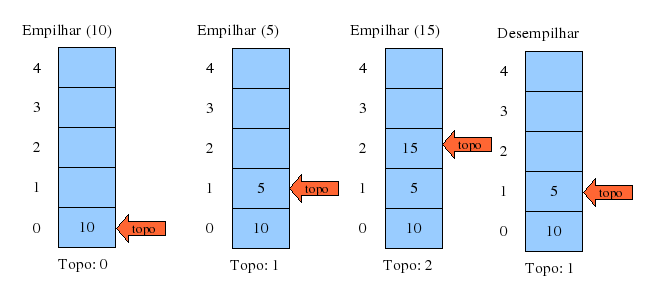
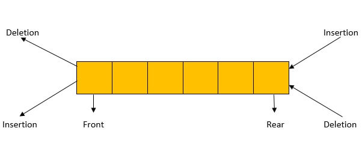

Operadores lógicos e matemáticos
| Operador | Simbolo | Exemplo |
|---|---|---|
| E | && | IF(true && true){} |
| OU | || | IF(true || true){} |
| NÃO | ! | IF(!true){} |
| Soma | + | 35 + 5 = 40 |
| Subtração | - | 35 - 5 = 30 |
| Divisão | / | 25 / 5 = 5 |
| Multplicação | * | 25 * 5 = 125 |
| Modulação | % | 45 % 2 = 1 |
| Atribuição | = | VAR x = 1 |
| Potênciação | ** | 5**2 = 25 |
| Incremento | ++ | num++ |
| Decremento | -- | num-- |
| Atribuição de adição | += | num += 4 |
| Atribuição de subtração | -= | num -= 4 |
| Atribuição de multplicação | *= | num *= 4 |
| Atribuição de divisão | /= | num /= 4 |
| Atribuição de módulo | %= | num %= 4 |
Variáveis condicionais
| Tipo | Descrição |
|---|---|
| IF | Verifica se a condição é verdadeira e executa um bloco de código. |
| ELSE-IF | Caso a condição do IF não se aplicar, essa sera testada./td> |
| ELSE | Executa um bloco de código caso as condições anteriores forem falsas. |
| SWITCH-CASE | Testa o valor de uma variável e executa um códico correspondente. |
Exemplos
//Inicializa a variável x como 10
var x = 10
if(x < 10){
x += 2; //Caso menor que 10 é somado 2 a x
}
else if(x > 10){
x -= 2 //Caso maior que 10 é subtraido 2 a x
}
else{
alert(x) //Caso as anteriores sejam falsas imprime x em um popup
}
switch(x){
case 12:
x *= 2; //se x valer 12 multiplica x por 2
break;
case 8:
x /= 2; //se x valer 8 divide x por 2
break;
default:
alert(x) //Caso as anteriores sejam falsas imprime x em um popup
}
Loops de repetição
| Tipo | Descrição |
|---|---|
| FOR | Inicializa um variável X com determinado valor e a compara a outro, X recebe incremento ou decremento ao final do bloco de código que é executado até que a comparação retorne falso. |
| FOR-EACH | Recebe um array e executa o bloco de códigos para cada um de seus elementos. |
| WHILE | Executa um bloco de código enquanto a condição for verdadeira. |
| DO-WHILE | Executa um bloco de código e ao final verifica uma condição, se verdadeira executa o bloco novamente. |
Exemplos
var x = true;
var y = 10;
var array = ['0', '1', '2', '3', '4', '5']
for(y; y > 0;y--){
alert(y) //Verifica se y é maior que 0, se verdadeiro diminue y
}
// Percorre o Array,
// para cada um de seus elementos é exibido um alerta com o valor do elemento
array.forEach(element => { alert(array[element]) });
while(x){ //Enquanto x for verdadeiro executa esse bloco
alert('Inicio do loop')
x = false
alert('fim do loop')
}
do{
alert(x) // moostra o x
x = !x // Inverte o valor de x
}while(x)
Funções
| Function: | As funcões executam um trecho determinado de seu código ao serem chamadas, elas podem ou não ter parâmetros. |
|---|
Exemplos
var horas = "00:00"
mostraHoras(horas) //chama a função mostraHoras dando como parâmetro a var horas
function mostraHoras(x){
// Escopo da função
alert(horas)
}
Arrays
| Array: | Os Arrays são uma estrutura de dados que permite armazenar uma coleção de elementos do mesmo tipo em uma sequência. Cada elemento do array é identificado por um índice, que representa sua posição na sequência. |
|---|
Exemplos
var lista_numeros = [1, 2, 3, 4, 5, 6, 7, 8, 9, 10] // cria um Array com 10 numeros
for(i = 0; i < lista_numero.lenght; i++ ){
//imprime o numero que estiver dentro da lista na posição i
console.log(lista_numero[i])
}
pilha
| pilha: | Em um array, é possível utilizar funções própriaspara manipular elementos em qualquer posiçãoda lista. Porém, há situaçõesonde é desejável maiscontrole sobre as operações que podem ser feitasna estrutura. Aí entra a implementação deestruturas de dados como a pilha (stack) e a fila(queue). |
|---|
Exemplos
O paradigma principal por trás da pilha é o LIFO -Last In, First Out, ou “o último a entrar é oprimeiro a sair”, em tradução livre.
fila
| fila: | A fila tem uma estrutura semelhante à pilha,porém com uma diferença conceitual importante:o paradigma por trás da fila é o FIFO - First In, FirstOut, ou “o primeiro a entrar é o primeiro a sair”,em tradução livre. |
|---|
Exemplos

fila
| deque: | A estrutura de dados deque (abreviação de double-ended queue ou“fila de duas pontas”)é uma variação da fila que aceita inserção e remoção de elementos tanto do início quanto do final da fila. |
|---|
Exemplos
fila
| Fila circular: | Outra variação da fila é a fila circular (circular queue), onde o último elemento é conectado com o primeiro elemento - como em um círculo: |
|---|
Exemplos

Entre as estruturas restantes, podemos citar as estrutuas de conjunto, dicionário ouhashmap, árvore, árvore binária,grafo e nó.